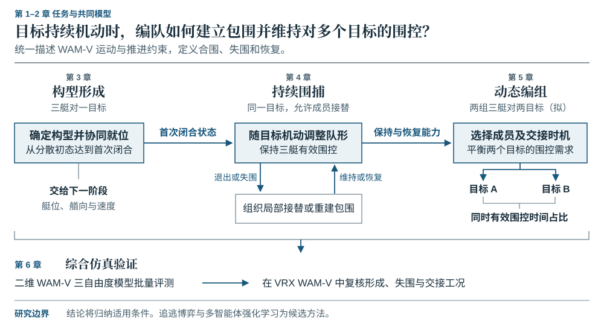
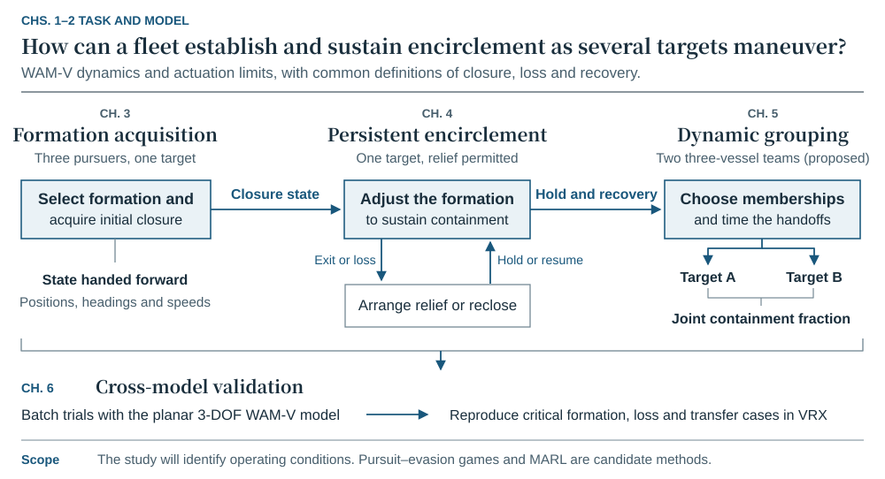

博士论文 · 研究方案Doctoral dissertation · Research plan
面向动态目标围捕的无人艇编队控制方法研究Formation control of unmanned surface vessels for dynamic target encirclement
三艘艇刚刚从三个方向围住目标。目标随即转向两艇之间的空隙。仅看这一刻的艇位，两支编队可以完全相同；当它们的艏向和航速不同，能否赶在目标之前补上缺口？Three vessels have just enclosed a target. It turns towards a gap. Two teams can have identical positions at that instant, yet very different headings and speeds. Which team can cover the gap in time?
本研究关注目标在首次合围后仍持续机动的情形。先考察一个三艇组怎样形成、保持和恢复包围，再把单组能力用于双目标之间的艇力调配。下文列出拟检验的问题与证据，实验结果将在验证后补充。The target keeps moving after the first enclosure. I study how one team forms, maintains and recovers an enclosure, then how two teams allocate vessels between moving targets. The questions and comparisons below are planned experiments.
讲解提示Speaker note
从同一幅合围快照讲起。请听众先判断：仅凭位置，能否知道目标下一次转向时哪一侧会失守？Start with a snapshot of the enclosure. Ask whether positions alone reveal which side will open when the target turns.
第1–2章 · 任务与共同模型Chapters 1–2 · Task and model
从首次合围到双目标同时受控From initial enclosure to joint containment
统一使用 WAM-V 的运动和推进约束，分别定义首次合围、失围与恢复。图中的箭头标明每项研究向下一项提供的状态或能力。All three studies share WAM-V motion and actuation constraints and common definitions of enclosure, loss and recovery. Each arrow identifies what the next study takes as input.


路线图的画法与原图出处Figure design and original examples
Diamanti 的海洋机器人博士论文图 1 将任务阶段与研究问题对应。李健翔等的图 2 用分支与汇合表示方法依赖。本图沿用这两种表达思路，重新绘制本课题的研究关系。Figure 1 of Diamanti’s marine robotics dissertation maps mission stages to research questions. Figure 2 of Li et al. uses branching and joining arrows to show method dependencies. The figure above applies these conventions to this dissertation.
第3章 · 单目标 · 3 对 1Chapter 3 · One target · Three pursuers
怎样形成下一阶段守得住的包围？Which closure states can the team defend?
从分散初态接近同一目标，三艇即使在相同时间到达相似的包围位置，也可能留下不同的补位余量。Starting from dispersed positions, two teams may form similar enclosures in the same time but differ in how quickly they can respond to a turn.
- 研究对象Study object
- 确定围捕构型和成员站位，考察首次安全闭合时各艇的位置、艏向和速度。Select the geometry and assign stations. At the first safe enclosure, record each vessel’s position, heading and speed.
- 拟作比较Planned comparison
- 让不同形成方法在闭合后切换到同一个保持控制器。比较首次闭合时间，以及面对相同逃逸规则时的保持表现。Hand each resulting state to the same holding controller. Compare time to first closure and subsequent retention against the same closed-loop evasion rule.
讲解提示Speaker note
需要解释两组艇为何在相似的几何终态下有不同的补位时间。Explain how two geometrically similar enclosures could leave different response times.
第4章 · 单目标 · 3 对 1Chapter 4 · One target · Three active pursuers
目标突围或一艘艇退出，包围怎样延续？Can the enclosure survive a turn or a handover?
从同一已闭合状态出发，目标可持续冲向一个缺口，也可在围捕艇接近时改变方向。Start from the same closed state. The target can commit to one gap or change direction as a pursuer approaches.
- 接替与恢复Handover and recovery
- 计划交接时，接替艇可提前到位。若一艘艇突然退出，余下两艇无法单独形成三角包围；从失围持续计时，直至接替艇到位并重新闭合。A scheduled relief can arrive before departure. If a vessel leaves abruptly, the two remaining vessels cannot enclose an area. Measure the interruption until the relief arrives and the team closes again.
- 拟作比较Planned comparison
- 用同样的观测和推进限制比较预测补位与利用目标运动历史的协同策略，记录首次失围时间、有效围控时间占比和恢复率。Give predictive and history-aware policies the same observations and actuation limits. Compare time to first loss, fraction of time enclosed and recovery rate.
讲解提示Speaker note
区分连续保持的交接和中断后的成功恢复。这两种轨迹应分别计分。Distinguish an uninterrupted handover from a successful recovery after a gap. They answer different questions.
第5章 · 双目标 · 拟采用 6 对 2Chapter 5 · Two targets · Proposed six-versus-two scenario
两组都需要艇时，什么时候值得换组？When does reassignment help both teams?
两个目标相互接近、交叉后再分离。原先适合围住目标 A 的艇，可能更接近目标 B，但转场途中原组会出现缺口。Two targets approach, cross and separate. A vessel assigned to A may end up closer to B, but changing teams can expose a gap during transit.
- 资源条件Fleet constraint
- 六艘艇各归一组，两个三艇组没有预留艇。目标 A、B 有标识时，有 20 种三加三的成员分法。Each vessel serves one group. Two teams of three leave no spare. With targets A and B distinguished, there are 20 possible assignments.
- 拟作比较Planned comparison
- 比较固定分组、按预计到达时间重组，以及计入转场和原组失围风险的重组。主指标为两个目标同时有效受控的时间占比。Compare fixed groups, reassignment by arrival time and reassignment accounting for transit and exposure of the donor group. Measure the fraction of a shared window for which both targets remain enclosed.
讲解提示Speaker note
把一次局部补位放到两组共同的时间轴上。接收组改善时，调出组的损失也要计入。Place the transfer on a common time axis. Count the donor team’s loss alongside the receiving team’s gain.
第6章与结论 · 验证计划Chapter 6 and conclusions · Validation plan
哪些结论能在 VRX 中复现？Which findings will carry over to VRX?
先用与 WAM-V 推进配置一致的二维三自由度模型开展配对试验，再将代表性的形成、临界失围和跨组交接工况放入 VRX。统一目标行为规则和任务判据，让目标实时响应各自面前的编队。Run paired trials with a planar three-degree-of-freedom model matched to the WAM-V propulsion configuration. Revisit representative cases of acquisition, near-breakout and team transfer in VRX. Use the same task criteria and evasion rule while allowing the target to react to the actual team.
追逃博弈和多智能体强化学习是候选方法。前者可描述双方怎样回应对方，后者可检验历史观测对协作的价值。选型取决于与模型预测控制等基线的对照证据。结论将界定方法适用的速度、机动和艇组条件。Pursuit–evasion games and multi-agent reinforcement learning are candidate approaches. The first can describe mutual responses. The second can test whether observation history helps the team coordinate. Comparisons with model-based baselines will determine the choice and delimit the operating conditions.
相关文献Selected reading
- Hu & Zhang (2022) · 三艇环绕运动目标的水池试验。Three-vessel surrounding of a moving target in a pool.
- Qu et al. (2025) · 六艇对两目标的动态分配与围捕仿真。Dynamic assignment and encirclement in a six-versus-two simulation.